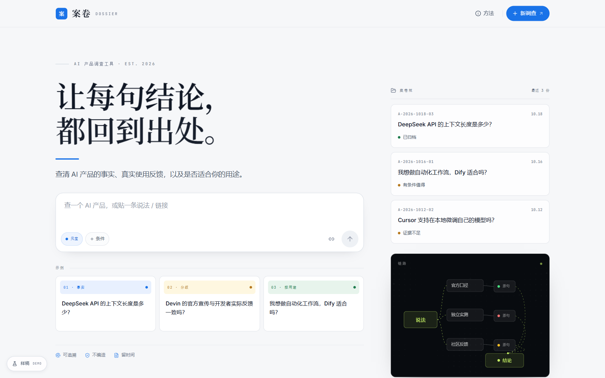
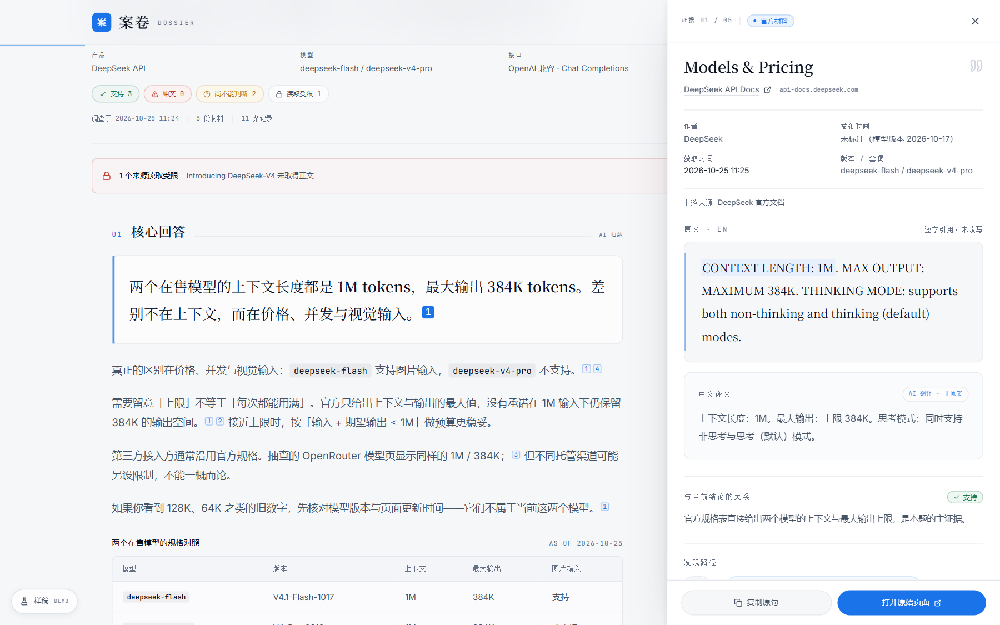
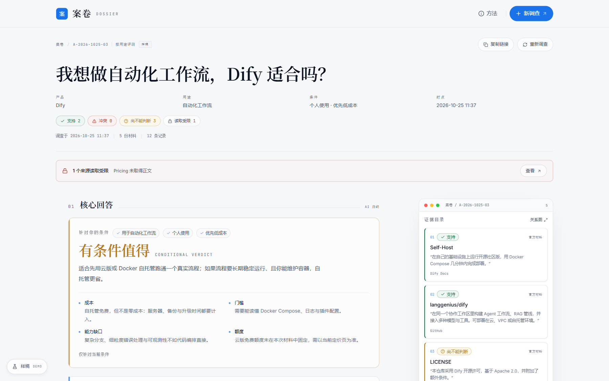
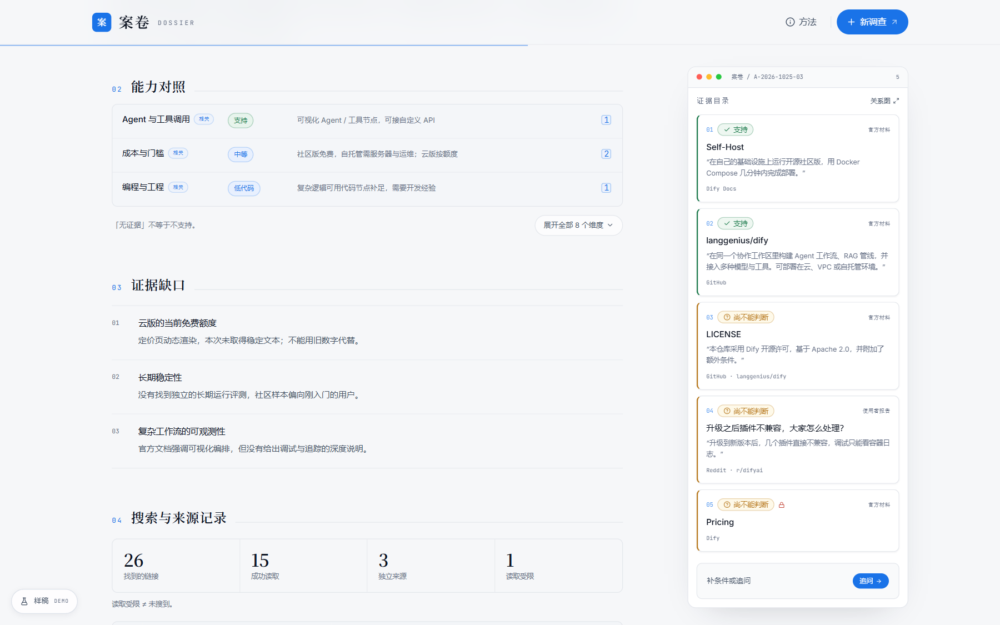
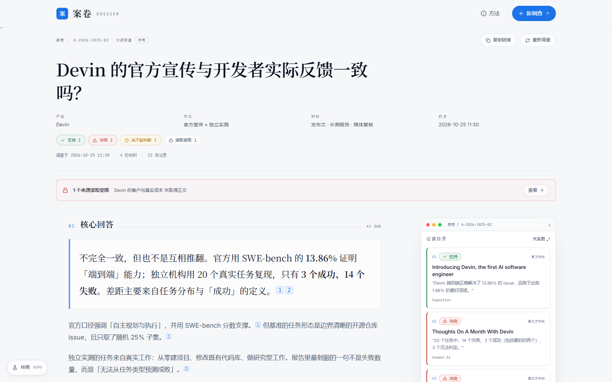
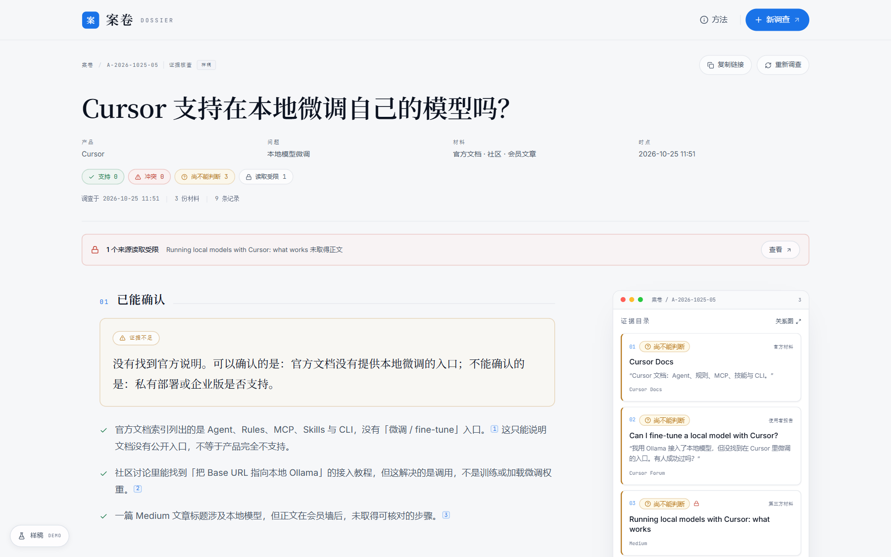
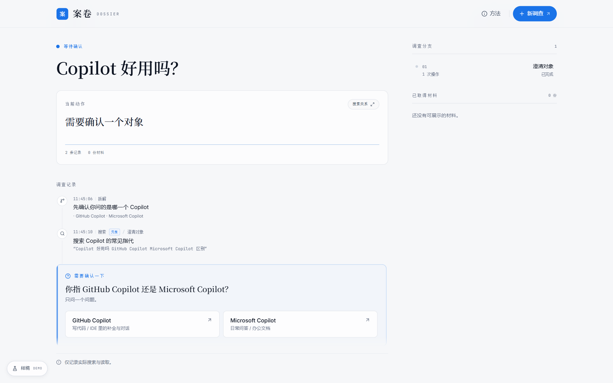
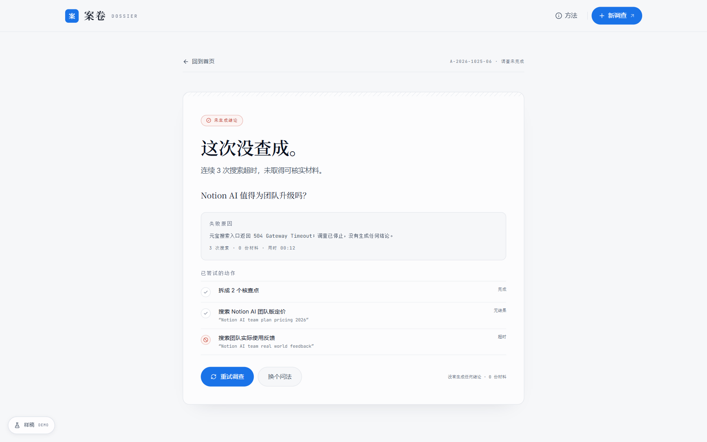
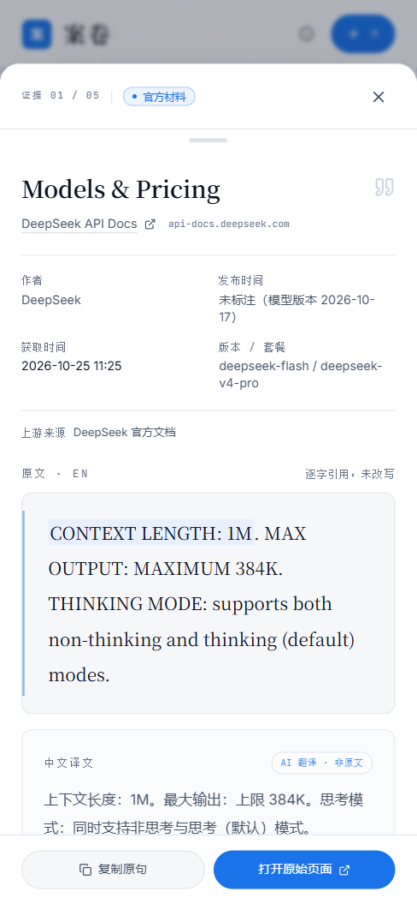

01 首页与调查
FIG. 01 — 02
02 先回答，再给依据
FIG. 03 — 04
03 按用途评测
FIG. 05 — 06

04 分歧与缺口
FIG. 07 — 10



05 搜索关系
FIG. 1106 移动端
FIG. 12 — 13单列阅读 · 来源表局部滚动

证据改为底部面板 · 关闭回到引用
样稿说明。页面里的产品数字、社区引文与结论是设计样稿，结果页均带「样稿」标记；正式演示前需替换为真实调查结果。
来源链接指向可打开的公开页面。原型没有接入实时搜索，未知问题不会生成假答案。